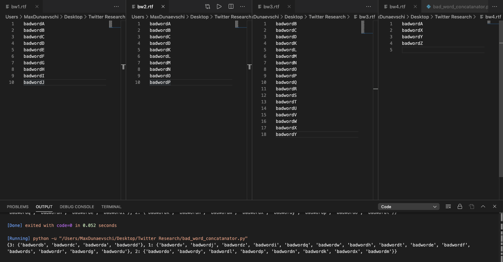

For my research, I work with the Institute of Software Research at Carnegie Mellon University. The goal of our research is to find the relationship between abusive language and sentiment. We produce several measures based on twitter data, in an attempt to analyze sentiment.
We can test abusive language by acquiring a measure of the frequency of bad words. To begin this phase I had to gather a construct a list of bad words. Given several lists of bad words, I wrote a script that would output a dictionary mapping word to frequency. This would allow us to determine the most common bad words used, so that we could construct a list that would encompass expected bad words.
We can test abusive language by acquiring a measure of the frequency of absolutist words. Absolutist words are words that are inclusive, all-encompassing, an end in themselves, and cannot be modified in any way. Based on our research, we found that these words were a marker for anxiety and depression, which creates an abusive connotation.
We can test abusive language by acquiring a measure of the frequency of exclusive words.
We can test abusive language by acquiring a measure of the frequency of pronouns. Second person pronouns, for example, may indicate a more direct communication among people and can be viewed as a "direct attack".
Once we collected lists of these word types, I wrote a program that would calculate the frequency for each of these types for indivudial twitter posts.Later, we realized the potential for emojis. I Wrote code that would count the amount of emojis in a post and categorize in good, neutral, and bad counts.
Using all of these measures, we wrote a program that would collect the frequency of these types of words. Using this information, we entered the collected data into a tool that would calculate sentiment (research advisor wrote).
The plan is to use this sentiment tool to determine whether posts are made by bots. Using sentiment, we can measure troll levels of posts. We plan on creating a machine learning algorithm that will determine whether a post was made by a bot.